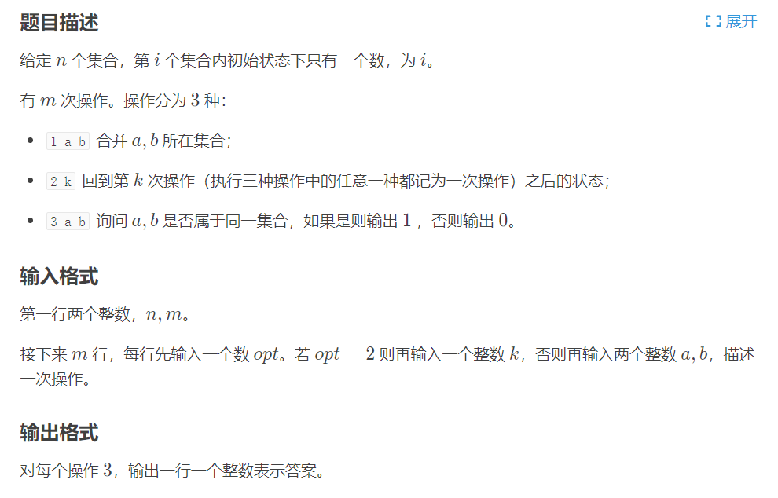

并查集是很常见的数据结构，通常我们合并两颗子树之后就没法拆开了，但是如果我们能够访问历史版本的并查集，那么就可以达到拆开的效果了。
学习可持久化并查集需要先学习并查集和可持久化数组~
如何实现并查集的可持久化？
对于并查集来说，最重要的就是father[]数组了，所以我们主要维护的就是father[]数组的可持久化。
并查集优化
并查集有两种最常见的优化方式。分别是路径压缩和按秩合并。
路径压缩
路径压缩是最常见的并查集优化方式了，路径压缩的效果就是将一颗子树的一些非root结点连接到root结点上，从一颗瘦高的树变成一颗矮胖的树，从而减少查找时间。写法也非常的简单。
1 | int find(int x) { |
但是对于可持久化并查集来说，还能否使用路径压缩呢？答案是最好别了，因为对于可持久化的数据结构来说，每操作一次就要生成一个新的版本，存在MLE的风险。
按秩合并
按秩合并需要记录下每颗子树的树高，在合并两颗子树时，将矮的子树挂在高的子树上，那么新的子树的最坏查询时间不会增大，也是常见的优化方式。
按秩合并在可持久化并查集常用，也是有必要的。
可持久化并查集的实现
参数
1 | // 维护可持久化数组的结点，因为要维护father数组和dep数组，所以开辟了80倍空间 |
可持久化数组
可持久化数组就没什么好说的，直接上板子
1 | void build(int l, int r, int &now) { |
并查集find()
find操作也非常的好写，注意不要路径压缩
1 | // ver是版本号 |
并查集merge()
merge操作使用按秩合并进行优化，需要注意的是，在合并时，当前版本是没有东西的，所以在操作时都要基于上一个版本。
1 | void merge(int ver, int x, int y) { |
洛谷P3402
洛谷P3402是一道模板题

1 | // 样例输入 |
1 | // AC代码 |